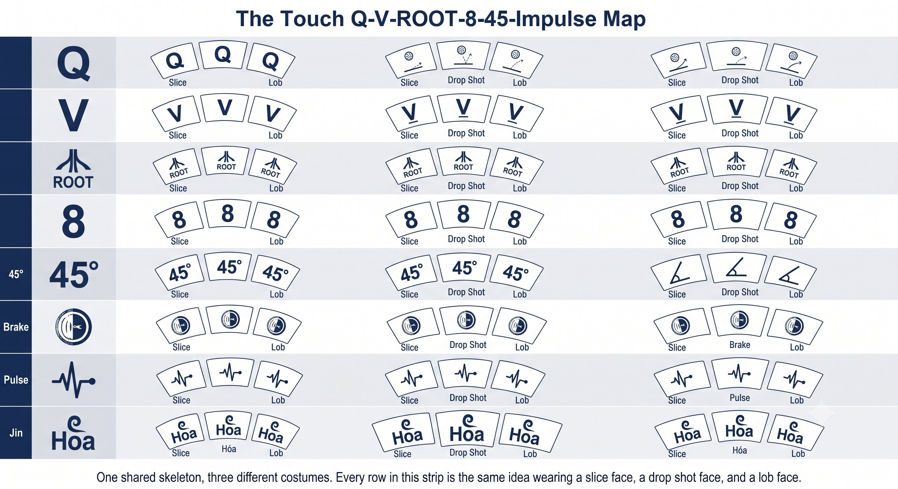
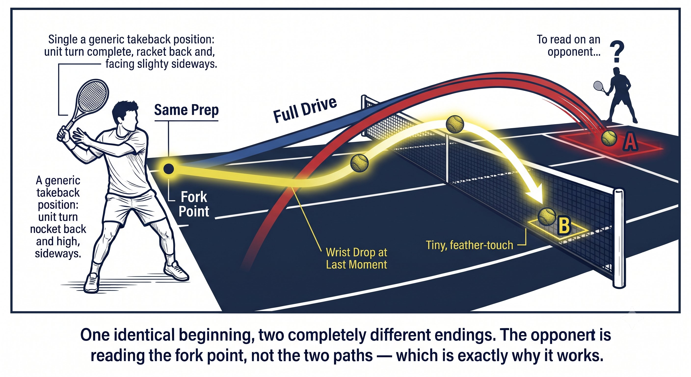
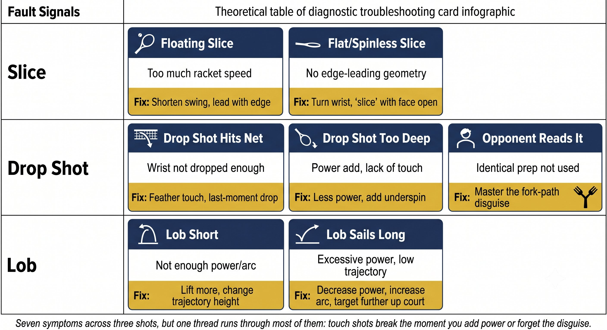

Chapter 25: Slice Drop Shot and Lob
(English version of Chapter 25 in the United Tennis Handbook)
CHAPTER 25

Figure 1
SLICE, DROP SHOT & LOB
The Touch & Disruption Game
Not every shot is about power. The slice disrupts rhythm. The drop shot breaks positioning. The lob buys time or attacks.
Why Touch Shots Matter
Power wins points. Touch wins matches. The player who can change pace, spin, and height controls the opponent.
— Henry Pham
These three shots share one DNA: they use the opponent's pace against them. They're Hua Jin shots — absorb and redirect.
The Touch Q-V-ROOT-8-45-Impulse Map
Figure 25.1: One shared skeleton, three different costumes. Every row in this strip is the same idea wearing a slice face, a drop shot face, and a lob face.

Figure 2
RULE: Touch shots run on constant firmness (4 to 5 out of 10). No gradient. The face locks early. Hua Jin — absorb and redirect.
Slice (Backhand and Forehand)
A slice isn't a chop downward. It's a controlled glide with a slightly open face, moving outside-to-inside on the backhand or inside-to-outside on the forehand.
Figure 25.2: Two slices, one shared rule. In both panels, look for the edge arriving before the face — if the face gets there first, the ball floats.

Figure 3
Coach's Tip
Slice error number one: opening the face too much, so the ball floats long. The fix: feel the pinky edge leading. The face squares at contact naturally. A slice isn't "open face" — it's "edge leads, face follows."
Drop Shot
The drop shot isn't a soft shot. It's a disguised shot. The opponent has to think drive until it's too late.
— Henry Pham
PRINCIPLE: Drop shot means the 3-1 drill. Hit three drives, one drop. Same prep. The opponent cannot read it.
Figure 25.3: One identical beginning, two completely different endings. The opponent is reading the fork point, not the two paths — which is exactly why it works.

Figure 4
Coach's Tip
If you feel a wrist flick on the drop shot, you're muscling it. A drop shot means relaxing — let the racket head drop from gravity. The face opens. The ball kisses the strings.
Lob
Figure 25.4: Three arcs, three purposes. The height and the target both change — trace each arc back to its label and you'll know exactly which lob you're looking at before it lands.

Figure 5
The offensive lob is a topspin shot, not a moonball. Brush up at 45 degrees. The face closes through contact.
Fault Signals
Figure 25.5: Seven symptoms across three shots, but one thread runs through most of them: touch shots break the moment you add power or forget the disguise.
Drills
1. Slice wall: hit 50 slices against a wall. Focus on the edge leading, a constant face, and rhythm.
2. The 3-1 drill: your partner feeds. Three drives, one drop. Same prep. 20 cycles.
3. Drop and pass: you drop, your partner runs in, you pass. This trains disguise plus the follow-up.
4. Lob practice: your partner is at net. You hit offensive topspin lobs. Target: the baseline corner.
5. Touch circuit: backhand slice, forehand slice, backhand drop, forehand drop, offensive lob — five reps each. Focus on constant firmness and face control.
EDGE LEADS. FACE LOCKED. ABSORB. REDIRECT. DISGUISE.
Checklist
– Slice: Continental grip, edge leads, face constant, high to low, finish high.
– Drop shot: same prep as the drive, Continental grip, open face at contact, absorb the pace, freeze the finish.
– Lob: offensive means a topspin brush up. Defensive means an open face, high finish.
– All touch shots: a firm wrist (4 to 5 out of 10), constant, no gradient. Hua Jin.
– Disguise: the 3-1 drill. The opponent cannot read it.
– If the slice floats, the face is too open. If the drop nets, there was too much cut. If the lob falls short, there's no topspin.
Where This Leads
This chapter integrates Q-V-ROOT-8-45-Impulse-Jin into the slice, the drop shot, and the lob. Chapter 26 covers court geometry and shot selection. Chapter 27 covers singles patterns and doubles systems.